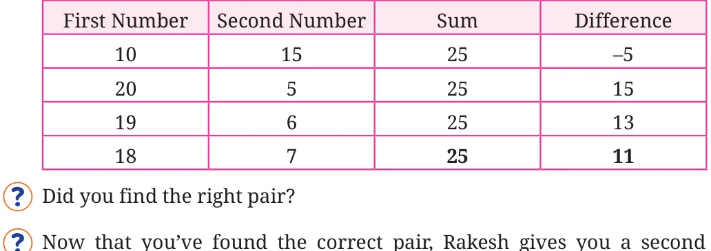

Rakesh’s Puzzle: A Number Game
Rakesh gives you a challenge. “I have thought of two numbers”, he says. “Their sum is 25, and their difference is 11.”
Can you tell me the two numbers? You don’t need to use any formulas. Just try different pairs of numbers and then check:
- 1.Do the two numbers add up to 25?
- 2.Is the difference between them 11?
(Remember: the difference means first number - second number.) Write your guesses like this:

challenge:
“Think of two numbers whose sum is 25, but their difference is - 11.” Use the same method. Try different pairs of numbers and fill in the table again. You will notice that if you swap the numbers from the first
puzzle, you get the answer to Rakesh’s second puzzle. That is, the first number is 7 and the second is 18!